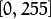

Histogram Calculation¶
Goal¶
In this tutorial you will learn how to:
Note
In the last tutorial (Histogram Equalization) we talked about a particular kind of histogram called Image histogram. Now we will considerate it in its more general concept. Read on!
What are histograms?¶
Histograms are collected counts of data organized into a set of predefined bins
When we say data we are not restricting it to be intensity values (as we saw in the previous Tutorial). The data collected can be whatever feature you find useful to describe your image.
Let’s see an example. Imagine that a Matrix contains information of an image (i.e. intensity in the range ):

What happens if we want to count this data in an organized way? Since we know that the range of information value for this case is 256 values, we can segment our range in subparts (called bins) like:
and we can keep count of the number of pixels that fall in the range of each . Applying this to the example above we get the image below ( axis x represents the bins and axis y the number of pixels in each of them).

This was just a simple example of how an histogram works and why it is useful. An histogram can keep count not only of color intensities, but of whatever image features that we want to measure (i.e. gradients, directions, etc).
Let’s identify some parts of the histogram:
- dims: The number of parameters you want to collect data of. In our example, dims = 1 because we are only counting the intensity values of each pixel (in a greyscale image).
- bins: It is the number of subdivisions in each dim. In our example, bins = 16
- range: The limits for the values to be measured. In this case: range = [0,255]
What if you want to count two features? In this case your resulting histogram would be a 3D plot (in which x and y would be and for each feature and z would be the number of counts for each combination of
 . The same would apply for more features (of course it gets trickier).
. The same would apply for more features (of course it gets trickier).
Code¶
What does this program do?
Downloadable code: Click here
Code at glance:
#include "opencv2/highgui/highgui.hpp"
#include "opencv2/imgproc/imgproc.hpp"
#include <iostream>
#include <stdio.h>
using namespace std;
using namespace cv;
/**
* @function main
*/
int main( int argc, char** argv )
{
Mat src, dst;
/// Load image
src = imread( argv[1], 1 );
if( !src.data )
{ return -1; }
/// Separate the image in 3 places ( B, G and R )
vector<Mat> bgr_planes;
split( src, bgr_planes );
/// Establish the number of bins
int histSize = 256;
/// Set the ranges ( for B,G,R) )
float range[] = { 0, 256 } ;
const float* histRange = { range };
bool uniform = true; bool accumulate = false;
Mat b_hist, g_hist, r_hist;
/// Compute the histograms:
calcHist( &bgr_planes[0], 1, 0, Mat(), b_hist, 1, &histSize, &histRange, uniform, accumulate );
calcHist( &bgr_planes[1], 1, 0, Mat(), g_hist, 1, &histSize, &histRange, uniform, accumulate );
calcHist( &bgr_planes[2], 1, 0, Mat(), r_hist, 1, &histSize, &histRange, uniform, accumulate );
// Draw the histograms for B, G and R
int hist_w = 512; int hist_h = 400;
int bin_w = cvRound( (double) hist_w/histSize );
Mat histImage( hist_h, hist_w, CV_8UC3, Scalar( 0,0,0) );
/// Normalize the result to [ 0, histImage.rows ]
normalize(b_hist, b_hist, 0, histImage.rows, NORM_MINMAX, -1, Mat() );
normalize(g_hist, g_hist, 0, histImage.rows, NORM_MINMAX, -1, Mat() );
normalize(r_hist, r_hist, 0, histImage.rows, NORM_MINMAX, -1, Mat() );
/// Draw for each channel
for( int i = 1; i < histSize; i++ )
{
line( histImage, Point( bin_w*(i-1), hist_h - cvRound(b_hist.at<float>(i-1)) ) ,
Point( bin_w*(i), hist_h - cvRound(b_hist.at<float>(i)) ),
Scalar( 255, 0, 0), 2, 8, 0 );
line( histImage, Point( bin_w*(i-1), hist_h - cvRound(g_hist.at<float>(i-1)) ) ,
Point( bin_w*(i), hist_h - cvRound(g_hist.at<float>(i)) ),
Scalar( 0, 255, 0), 2, 8, 0 );
line( histImage, Point( bin_w*(i-1), hist_h - cvRound(r_hist.at<float>(i-1)) ) ,
Point( bin_w*(i), hist_h - cvRound(r_hist.at<float>(i)) ),
Scalar( 0, 0, 255), 2, 8, 0 );
}
/// Display
namedWindow("calcHist Demo", CV_WINDOW_AUTOSIZE );
imshow("calcHist Demo", histImage );
waitKey(0);
return 0;
}
Explanation¶
Create the necessary matrices:
Mat src, dst;
Load the source image
src = imread( argv[1], 1 ); if( !src.data ) { return -1; }
Separate the source image in its three R,G and B planes. For this we use the OpenCV function split:
vector<Mat> bgr_planes; split( src, bgr_planes );
our input is the image to be divided (this case with three channels) and the output is a vector of Mat )
Now we are ready to start configuring the histograms for each plane. Since we are working with the B, G and R planes, we know that our values will range in the interval 
Establish number of bins (5, 10...):
int histSize = 256; //from 0 to 255
Set the range of values (as we said, between 0 and 255 )
/// Set the ranges ( for B,G,R) ) float range[] = { 0, 256 } ; //the upper boundary is exclusive const float* histRange = { range };
We want our bins to have the same size (uniform) and to clear the histograms in the beginning, so:
bool uniform = true; bool accumulate = false;
Finally, we create the Mat objects to save our histograms. Creating 3 (one for each plane):
Mat b_hist, g_hist, r_hist;
We proceed to calculate the histograms by using the OpenCV function calcHist:
/// Compute the histograms: calcHist( &bgr_planes[0], 1, 0, Mat(), b_hist, 1, &histSize, &histRange, uniform, accumulate ); calcHist( &bgr_planes[1], 1, 0, Mat(), g_hist, 1, &histSize, &histRange, uniform, accumulate ); calcHist( &bgr_planes[2], 1, 0, Mat(), r_hist, 1, &histSize, &histRange, uniform, accumulate );
where the arguments are:
- &bgr_planes[0]: The source array(s)
- 1: The number of source arrays (in this case we are using 1. We can enter here also a list of arrays )
- 0: The channel (dim) to be measured. In this case it is just the intensity (each array is single-channel) so we just write 0.
- Mat(): A mask to be used on the source array ( zeros indicating pixels to be ignored ). If not defined it is not used
- b_hist: The Mat object where the histogram will be stored
- 1: The histogram dimensionality.
- histSize: The number of bins per each used dimension
- histRange: The range of values to be measured per each dimension
- uniform and accumulate: The bin sizes are the same and the histogram is cleared at the beginning.
Create an image to display the histograms:
// Draw the histograms for R, G and B int hist_w = 512; int hist_h = 400; int bin_w = cvRound( (double) hist_w/histSize ); Mat histImage( hist_h, hist_w, CV_8UC3, Scalar( 0,0,0) );
Notice that before drawing, we first normalize the histogram so its values fall in the range indicated by the parameters entered:
/// Normalize the result to [ 0, histImage.rows ] normalize(b_hist, b_hist, 0, histImage.rows, NORM_MINMAX, -1, Mat() ); normalize(g_hist, g_hist, 0, histImage.rows, NORM_MINMAX, -1, Mat() ); normalize(r_hist, r_hist, 0, histImage.rows, NORM_MINMAX, -1, Mat() );
this function receives these arguments:
- b_hist: Input array
- b_hist: Output normalized array (can be the same)
- 0 and**histImage.rows**: For this example, they are the lower and upper limits to normalize the values of r_hist
- NORM_MINMAX: Argument that indicates the type of normalization (as described above, it adjusts the values between the two limits set before)
- -1: Implies that the output normalized array will be the same type as the input
- Mat(): Optional mask
Finally, observe that to access the bin (in this case in this 1D-Histogram):
/// Draw for each channel for( int i = 1; i < histSize; i++ ) { line( histImage, Point( bin_w*(i-1), hist_h - cvRound(b_hist.at<float>(i-1)) ) , Point( bin_w*(i), hist_h - cvRound(b_hist.at<float>(i)) ), Scalar( 255, 0, 0), 2, 8, 0 ); line( histImage, Point( bin_w*(i-1), hist_h - cvRound(g_hist.at<float>(i-1)) ) , Point( bin_w*(i), hist_h - cvRound(g_hist.at<float>(i)) ), Scalar( 0, 255, 0), 2, 8, 0 ); line( histImage, Point( bin_w*(i-1), hist_h - cvRound(r_hist.at<float>(i-1)) ) , Point( bin_w*(i), hist_h - cvRound(r_hist.at<float>(i)) ), Scalar( 0, 0, 255), 2, 8, 0 ); }
we use the expression:
b_hist.at<float>(i)
where
 indicates the dimension. If it were a 2D-histogram we would use something like:
indicates the dimension. If it were a 2D-histogram we would use something like:b_hist.at<float>( i, j )
Finally we display our histograms and wait for the user to exit:
namedWindow("calcHist Demo", CV_WINDOW_AUTOSIZE ); imshow("calcHist Demo", histImage ); waitKey(0); return 0;
Result¶
Using as input argument an image like the shown below:

Produces the following histogram:

Help and Feedback
You did not find what you were looking for?- Ask a question on the Q&A forum.
- If you think something is missing or wrong in the documentation, please file a bug report.